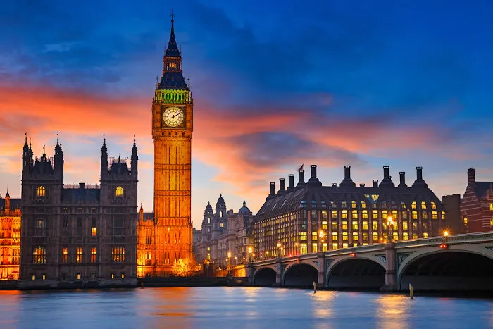

Seja bem vindo ao Inglaterra

A Inglaterra, local de nascimento de Shakespeare e dos Beatles, é um país nas ilhas britânicas que faz fronteira com a Escócia e o País de Gales. A capital, Londres, situada às margens do rio Tâmisa, abriga o Parlamento, o Big Ben e a Torre de Londres, do século XI. A cidade é também um moderno centro multicultural de artes e negócios. Outras grandes cidades são Manchester, Birmingham, Liverpool, Bristol e os centros universitários de Oxford e Cambridge.
